Final Report
Motivation
MLB player salaries are growing faster than ever. In 2001, former Seattle Mariners superstar Alex Rodriguez signed a 10-year, $252 million deal that broke the record for the most lucrative contract in professional sports history. And yet, Rodriguez’s deal pales in comparison to the monster contract that current superstar Juan Soto is expected to sign within the next week, which is projected to go for at least 12 years and $600 million. The skyrocketing salaries don’t just apply to the game’s most marquee names; since 2003, the average player salary has more than doubled, from $2.37 million to $4.98 million for the 2024 season (source). As players become more and more expensive and teams face increasingly harsh luxury tax penalties for exceeding certain payroll thresholds, MLB teams face important decisions on which, if any, free agents to sign to long-term, expensive contracts.
The primary goal of our project is to determine whether baseball players – both batters and pitchers – are worth their salaries, and whether teams should focus primarily on signing big-money free agents or taking a more egalitarian and young player-heavy approach. More specifically, are advanced statistics such as OPS+ (for hitters) and ERA+ (for pitchers) significantly associated with player salary? Our conclusions could give MLB teams insight into how they can build their rosters to optimize their chances of making the postseason and ultimately winning the World Series.
Initial questions
Before beginning the project, we set out to potentially answer three primary questions:
What collected statistics are most correlated with salary? Are advanced statistics such as ERA closer than simple counts such as strikeouts?
Are GMs good at deciding who to give contracts? That is, do the players with the highest salaries have the best performance metrics?
Can we predict the salary of a player with a model built from their 2022 statistics?
After conducting an exploratory data analysis, we adjusted our questions into:
Can we construct a model from both counting and advanced statistics that predicts the salary of a baseball player?
What player is on the ‘best’ contract? That is, who is the best player in the MLB in terms outperforming their contract? What player is on the ‘worst’ contract?
Data
Salary Data
The salary data was downloaded from a google sheets file compiled by the website Cot’s Contracts.
The salaries data is cleaned and processed by renaming columns for clarity (e.g., position, salary_2022, service_time_yrs, name). The name column is split, reversed, and rejoined to standardize the name format, handling “Jr” formatting and removing special characters. Non-ASCII characters are converted to Latin equivalents using stri_trans_general(). The primary position is extracted from the position column, and the positions are reordered using fct_relevel() to create a new simple_position column. Additionally, a service_time_floor column is created by rounding service_time_yrs to the nearest whole number using floor(), and we also created an experience_group variable for players early in their career (0-2 years) vs. later in their career (3+ years). The final dataset contains cleaned player names, positions, salary information, and service time.
salaries = read_excel(
"data/MLB-Salaries 2000-24.xlsx",
sheet = "2022.xls",
skip = 1) |>
select(1:4) |>
rename(position = "Pos'n",
salary_2022 = "2022.0",
service_time_yrs = "MLS",
name = "Player") %>%
mutate(name = str_split(name, ","),
name = map(name, rev),
name = map_chr(name, str_c, collapse = " "),
name = str_trim(name),
name = str_replace_all(name, "[*#\\.,]", ""),
junior = str_detect(name, "Jr"),
name = if_else(junior == TRUE, str_remove(name, " Jr"), name),
name = if_else(junior == TRUE, str_c(name, " Jr"), name),
name = stringi::stri_trans_general(name,id = "Latin-ASCII")) |>
select(-junior) %>%
mutate(simple_position = str_split_i(position, "-", 1),
simple_position = fct_relevel(simple_position,
c("c", "1b", "2b", "3b", "ss",
"lf", "cf", "rf", "inf", "of",
"dh", "rhp", "lhp")),
service_time_floor = floor(service_time_yrs),
experience_group = case_when(service_time_floor <= 2 ~ "0-2 years",
service_time_floor >= 3 ~ "3+ years"))Batting Data
The batting and pitching data both come from a dataset on kaggle.
To create a merged dataset of player batting statistics and salary information, several transformations were needed. First, because players could be listed with multiple teams due to trades, we filtered based on unique name and league memebership. We merged the batting data with the salary data by player name, focusing on players with at least 100 plate appearances, to create the merged_batting dataset. We also created two datasets identifying discrepancies: one where salary data is missing in the batting dataset and one where batting data is missing in the salary dataset.
batting = read_delim("data/2022 MLB Player Stats - Batting.csv", delim = ";",
locale = locale(encoding = "latin1")) |>
janitor::clean_names() %>%
group_by(name) |>
mutate(name_count = n(),
keep_row = case_when(name_count == 1 ~ TRUE,
name_count > 1 & tm == "TOT" ~ TRUE,
.default = FALSE)) |>
filter(keep_row == TRUE) %>%
mutate(name_count = n(),
keep_row = case_when(name_count == 1 ~ TRUE,
name_count > 1 & lg == "MLB" ~ TRUE,
.default = FALSE)) |>
ungroup() |>
filter(keep_row == TRUE) %>%
mutate(name = str_split(name, "\\s+"),
name = map_chr(name, str_c, collapse = " "),
name = str_trim(name),
name = str_replace_all(name, "[*#\\.]", ""),
name = stringi::stri_trans_general(name,id = "Latin-ASCII"))
merged_batting <- salaries |>
mutate(simple_position = str_split_i(position, "-", 1)) |>
filter(!simple_position %in% c("rhp","lhp")) |>
inner_join(batting, by = "name") |>
filter(pa >= 100)
salary_not_in_batting <- anti_join(salaries, batting, by = "name")
batting_not_in_salary <- anti_join(batting, salaries, by = "name")Pitching Data
To create a merged dataset of player pitching statistics and salary information, we performed similar transofrmations to the batting data above. Then wee merged the pitching data with the salary data by player name, focusing on players with at least 20 innings pitched, to create the merged_pitching dataset. We then processed that pitching data, including total innings pitched (ip_total), pitcher hand, and pitcher type. Missing player data in either the salaries or pitching dataset is also identified.
pitching = read_delim("data/2022 MLB Player Stats - Pitching.csv", delim = ";",
locale = locale(encoding = "latin1")) |>
janitor::clean_names() %>%
group_by(name) |>
mutate(name_count = n(),
keep_row = case_when(name_count == 1 ~ TRUE,
name_count > 1 & tm == "TOT" ~ TRUE,
.default = FALSE)) |>
filter(keep_row == TRUE) %>%
mutate(name_count = n(),
keep_row = case_when(name_count == 1 ~ TRUE,
name_count > 1 & lg == "MLB" ~ TRUE,
.default = FALSE)) |>
ungroup() |>
filter(keep_row == TRUE) %>%
mutate(name = str_split(name, "\\s+"),
name = map_chr(name, str_c, collapse = " "),
name = str_trim(name),
name = str_replace_all(name, "[*#\\.]", ""),
name = stringi::stri_trans_general(name,id = "Latin-ASCII"))
merged_pitching <- inner_join(salaries, pitching, by = "name") |>
filter(ip >= 20) |>
separate(ip, into = c("ip", "ip_dec"), remove = FALSE, convert = TRUE) |>
mutate(ip_dec_333 = ifelse(is.na(ip_dec), 0, ip_dec * 333) ,
ip_total = paste(ip, ip_dec_333, sep = "."),
ip_total = as.numeric(ip_total)) |>
select(-ip, -ip_dec, -ip_dec_333) |>
separate(position, into = c("hand", "pitcher_type")) |>
mutate(pitcher_type = ifelse(is.na(pitcher_type), "r", pitcher_type)) |>
filter(hand == "lhp" | hand == "rhp")
salary_not_in_pitching <- anti_join(salaries, pitching, by = "name")
pitching_not_in_salary <- anti_join(pitching, salaries, by = "name")Exploratory analysis
Our exploratory data analysis can be grouped into three categories: salary, batting, and pitching.
Salary EDA
Player salaries were highly right-skewed. This was expected, as many players make the league minimum salary of 700,000. The one position group not so heavily right skewed are the Designated Hitters. Similarly, the Designated Hitters had a higher average years of experience. Intuitively this makes sense as teams will want to select the better players for the position. Overall, most players were in their first year of the MLB with 68.2% having 5 or less years of experience. Players with more years of experience seem to get higher salaries, increasing as their years of experience.
# Salary by Posiition Group
salaries |>
mutate(position_group = case_match(simple_position,
c("rhp","lhp") ~ "pitcher",
c("cf","lf","rf","of") ~ "outfield",
"dh" ~ "dh",
.default = "infield")) |>
ggplot(aes(x = salary_2022, color = position_group)) +
geom_density() +
labs(title = "Salary by Position Group",
x = "2022 Salary",
y = "") +
scale_x_continuous(labels = label_comma()) +
scale_color_discrete(name = "Position Group",
labels = c("Designated Hitter",
"Infield",
"Outfield",
"Pitcher")) +
theme_bw()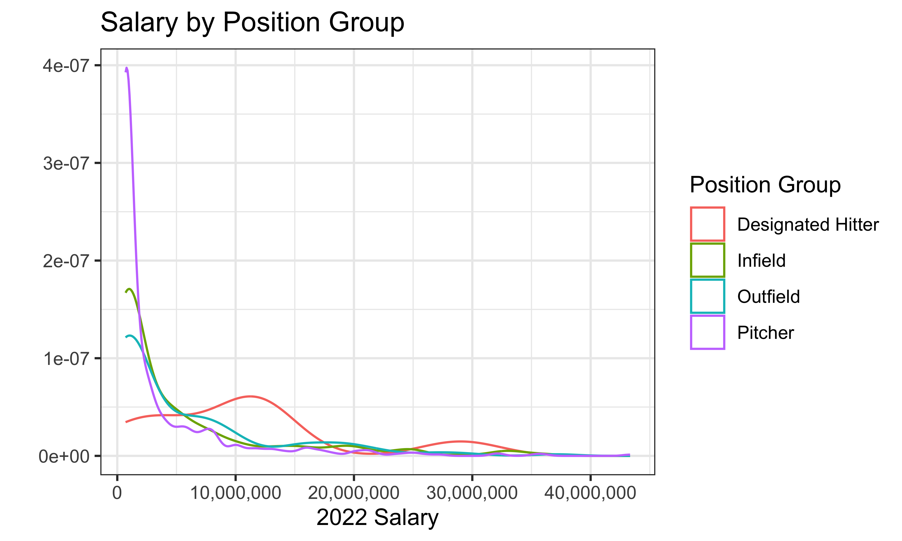
# Salary by Experience
salaries %>%
ggplot(aes(x=factor(floor(service_time_yrs)), y=salary_2022)) +
geom_boxplot() +
labs(title = "Salary Distribution for Years of Experience",
x = "Years of Experience",
y = "") +
scale_y_continuous(labels = label_comma()) +
theme_bw()
# Salary by Experience
salaries %>%
ggplot(aes(x=experience_group, y=salary_2022)) +
geom_boxplot() +
labs(title = "Salary Distribution for Years of Experience",
x = "Years of Experience",
y = "") +
scale_y_continuous(labels = label_comma()) +
theme_bw()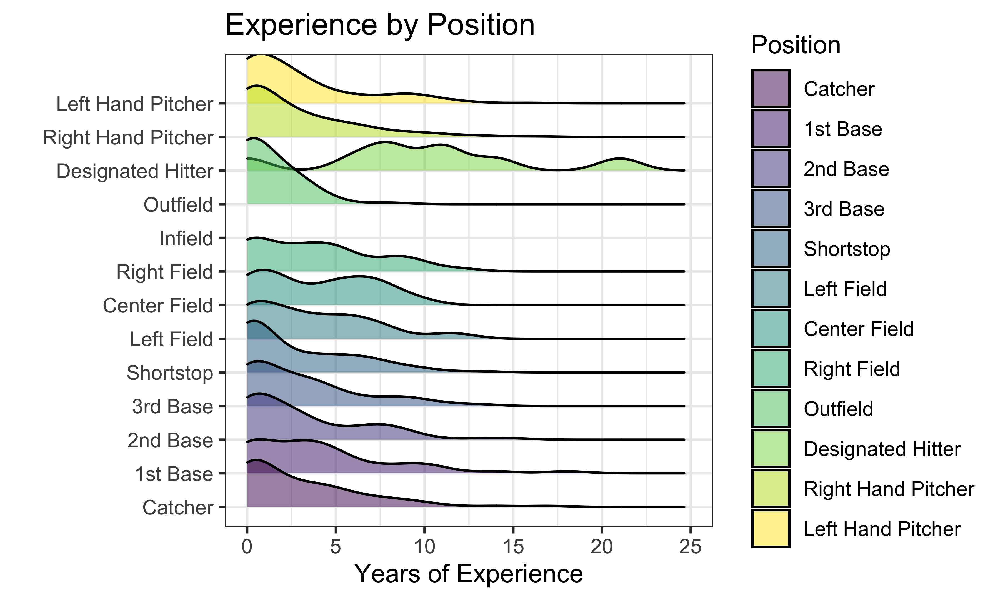
# Experience by Position
salaries |>
ggplot(aes(x = service_time_floor,
y = simple_position,
fill = simple_position)) +
ggridges::geom_density_ridges(alpha = 0.5) +
labs(title = "Experience by Position",
x = "Years of Experience",
y = "") +
xlim(0,25) +
scale_y_discrete(labels = c("1b" = "1st Base",
"2b" = "2nd Base",
"3b" = "3rd Base",
"inf" = "Infield",
"c" = "Catcher",
"rf" = "Right Field",
"lf" = "Left Field",
"cf" = "Center Field",
"of" = "Outfield",
"lhp" = "Left Hand Pitcher",
"rhp" = "Right Hand Pitcher",
"dh" = "Designated Hitter",
"ss" = "Shortstop")) +
guides(fill="none") +
theme_bw()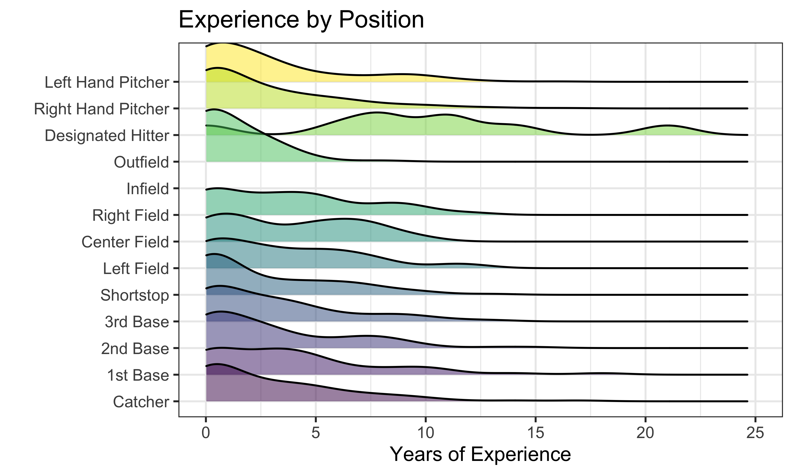
Batting EDA
Many of the counting statistics for batting are right skewed, as most players are not hitting multiple home runs in the season. Some of the advanced statistics such as OPS+ are more normally distributed. An important idea to keep in mind is that many of these collected statistics are strongly correlated with each other as the advanced statistics are often a formula taking input from the counting statistics. Looking at the relation with salary, it seems that there may be an association between salary and home runs as well as OPS+.
# Chances at Bat by Home Runs
merged_batting %>%
ggplot(aes(x = ab,y= hr)) +
geom_point(aes(color = ops)) +
geom_smooth(method = lm, se = FALSE, color = "firebrick") +
labs(title = "Who is the most 'effective' at the plate?",
x = "Chances at Bat",
y = "Number of Home Runs") +
scale_color_continuous("OPS") +
theme_bw()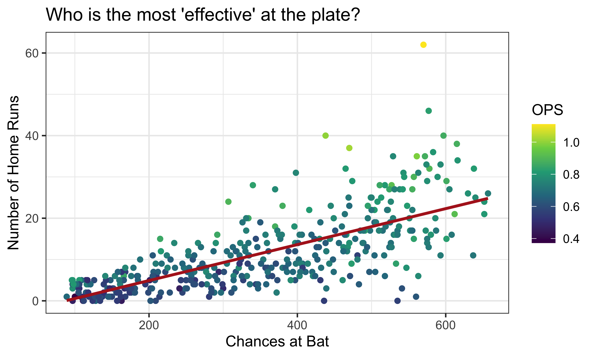
# Corrs for Batting Data
merged_batting |>
select(hr, ba, ops) |>
GGally::ggpairs()
# Distributions for Used Statistics
yrsCol = merged_batting |>
count(experience_group) |>
ggplot(aes(x = experience_group, y=n)) +
geom_col(fill = 'blue', col = 'black') +
labs(x="Years of Experience",y="") +
theme_bw()
hrsHist = merged_batting |>
ggplot(aes(x = hr)) +
geom_histogram(fill = 'purple', col = 'black') +
labs(x="Home Runs",y="") +
theme_bw()
basHist = merged_batting |>
ggplot(aes(x = ba)) +
geom_histogram(fill = 'yellow', col = 'black') +
labs(x="Batting Averages",y="") +
theme_bw()
opsHist = merged_batting |>
ggplot(aes(x = ops_2)) +
geom_histogram(fill = 'lightgreen', col = 'black') +
labs(x="OPS+",y="") +
theme_bw()
dist_patch = (yrsCol+hrsHist)/(basHist+opsHist)
dist_patch + plot_annotation(title = "Distribution of Important Batting Statistics")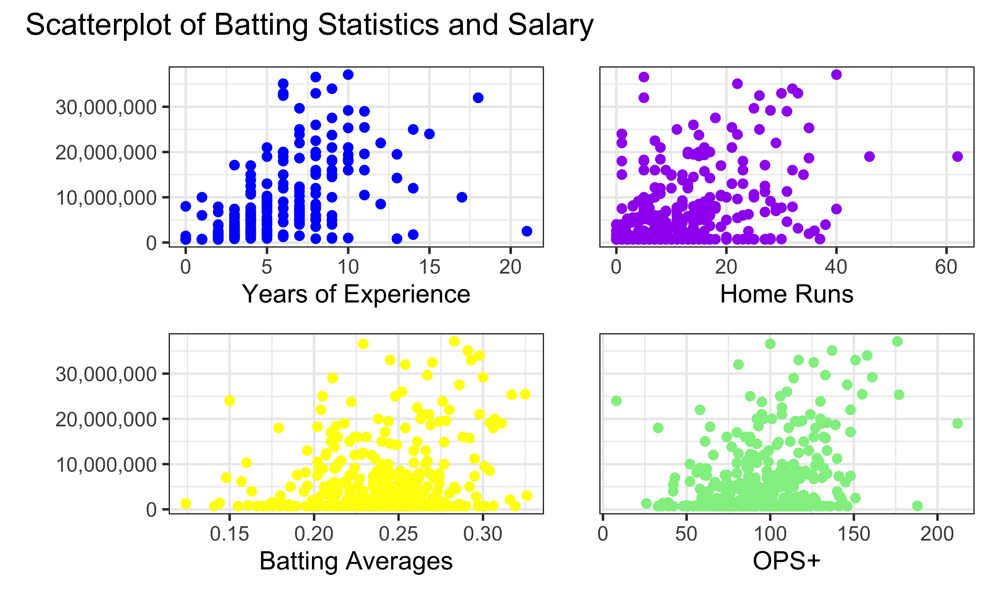
# Scatter for Used Statistics
yrs = merged_batting |>
ggplot(aes(x = experience_group, y = salary_2022)) +
geom_boxplot(col = 'blue') +
labs(x="Years of Experience",y="") +
scale_y_continuous(labels = label_comma()) +
theme_bw()
hrs = merged_batting |>
ggplot(aes(x = hr, y = salary_2022)) +
geom_point(col = 'purple') +
guides(y="none") +
labs(x="Home Runs",y="") +
theme_bw()
bas = merged_batting |>
ggplot(aes(x = ba, y = salary_2022)) +
geom_point(col = 'yellow') +
labs(x="Batting Averages",y="") +
scale_y_continuous(labels = label_comma()) +
theme_bw()
ops = merged_batting |>
ggplot(aes(x = ops_2, y = salary_2022)) +
geom_point(col = 'lightgreen') +
guides(y="none") +
labs(x="OPS+",y="") +
theme_bw()
scatter_patch = (yrs+hrs)/(bas+ops)
scatter_patch + plot_annotation(title = "Scatterplot of Batting Statistics and Salary")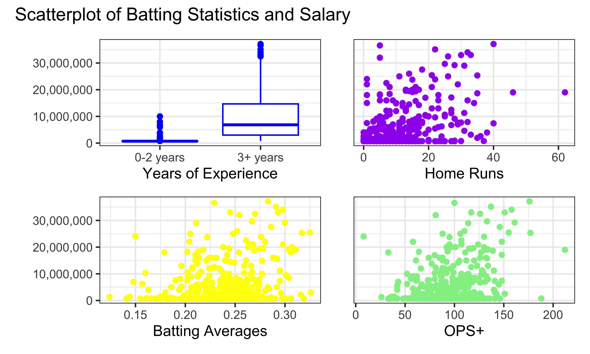
Pitching EDA
ip_plot = merged_pitching |>
ggplot(aes(x = ip_total)) +
geom_histogram(binwidth = 5, fill = "red", col = "black") +
labs(
x = "Innings Pitched",
y = "") +
theme_bw()
era_plot = merged_pitching |>
ggplot(aes(x = era_2)) +
geom_histogram(fill = "lightblue", col = "black") +
labs(
x = "ERA+",
y = "") +
theme_bw()
bb_plot = merged_pitching |>
ggplot(aes(x = bb9)) +
geom_histogram(fill = "darkgreen", col = "black") +
labs(
x = "Walks per 9 Innings (BB/9)",
y = "") +
theme_bw()
so_plot = merged_pitching |>
ggplot(aes(x = so9)) +
geom_histogram(fill = "orange", col = "black") +
labs(
x = "Strikeouts per 9 Innings (SO/9)",
y = "") +
guides() +
theme_bw()
hist_pitch = (ip_plot + era_plot) / (bb_plot + so_plot)
hist_pitch + plot_annotation(title = "Histograms of Pitching Statistics")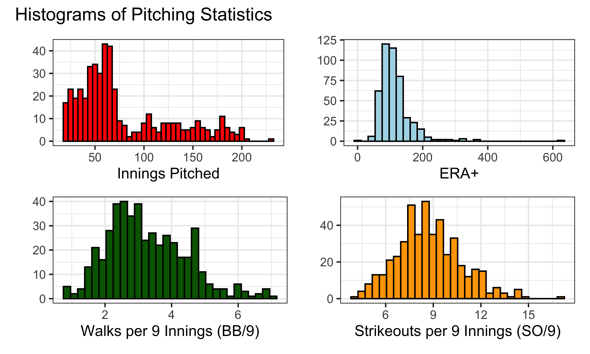
The distribution of innings pitched is quite right-skewed, with a peak around 70 innings pitched. The distribution of ERA+ is right-skewed as well, with a peak around 100 (the league average) and a small number of pitchers with an ERA+ above 200. The distributions of BB/9 and SO/9 are mostly symmetric, with peaks around 3 and 9, respectively.
ip_sal = merged_pitching |>
ggplot(aes(x = ip_total, y = salary_2022)) +
geom_point(col = "red") +
scale_x_continuous(lim = c(0, 250)) +
scale_y_continuous(labels = label_comma()) +
labs(x = "Innings Pitched",
y = "") +
theme_bw()
era_sal = merged_pitching |>
ggplot(aes(x = era_2, y = salary_2022)) +
geom_point(col = "lightblue") +
scale_x_continuous(lim = c(0, 400)) +
scale_y_continuous(labels = label_comma()) +
labs(x = "ERA+",
y = "") +
guides(y="none") +
theme_bw()
bb_sal = merged_pitching |>
ggplot(aes(x = bb9, y = salary_2022)) +
geom_point(col = "darkgreen") +
scale_x_continuous(lim = c(0, 10)) +
scale_y_continuous(labels = label_comma()) +
labs(x = "Walks per 9 Innings (BB/9)",
y = "") +
theme_bw()
so_sal = merged_pitching |>
ggplot(aes(x = so9, y = salary_2022)) +
geom_point(col = "orange") +
scale_x_continuous(lim = c(0, 20)) +
scale_y_continuous(labels = label_comma()) +
labs(x = "Strikeouts Per 9 Innings (SO/9)",
y = "") +
guides(y="none") +
theme_bw()
scatt_pitch = (ip_sal + era_sal) / (bb_sal + so_sal)
scatt_pitch + plot_annotation(title = "Scatterplots of Pitching Statistics and Salary")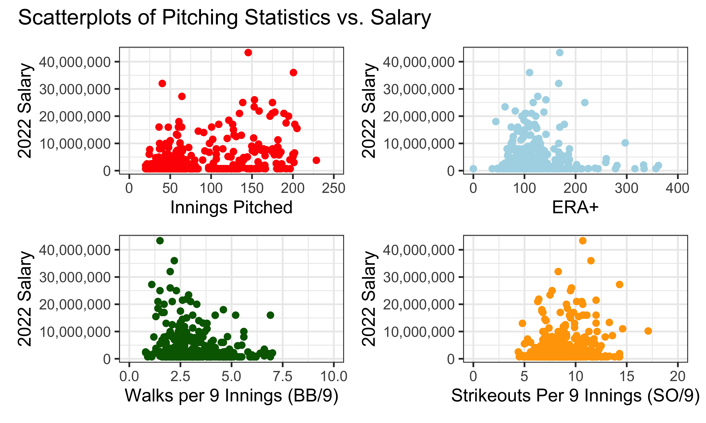
Interestingly, the pitchers with the highest ERA+ often had considerably lower salaries.
Additional analysis
Batting Model
lm_batting = lm(log10(salary_2022) ~ ops_2 + experience_group,
data = merged_batting)
broom::tidy(lm_batting)| term | estimate | std.error | statistic | p.value |
|---|---|---|---|---|
| (Intercept) | 5.5217232 | 0.0669508 | 82.474364 | 0 |
| ops_2 | 0.0043860 | 0.0006429 | 6.822667 | 0 |
| experience_group3+ years | 0.8509329 | 0.0376350 | 22.610119 | 0 |
broom::glance(lm_batting)| r.squared | adj.r.squared | sigma | statistic | p.value | df | logLik | AIC | BIC | deviance | df.residual | nobs |
|---|---|---|---|---|---|---|---|---|---|---|---|
| 0.6228295 | 0.6206804 | 0.3432482 | 289.8068 | 0 | 2 | -122.2651 | 252.5303 | 268.0075 | 41.35459 | 351 | 354 |
plot(residuals(lm_batting) ~ fitted.values(lm_batting),
main = "Residuals vs. Fitted Values Plot for Batting Model",
xlab = "Fitted Values",
ylab = "Residuals")
abline(h = 0)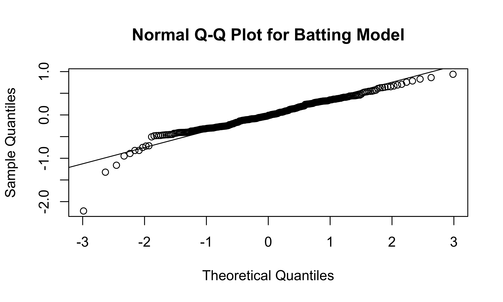
qqnorm(residuals(lm_batting),
main = "Normal Q-Q Plot for Batting Model")
qqline(residuals(lm_batting))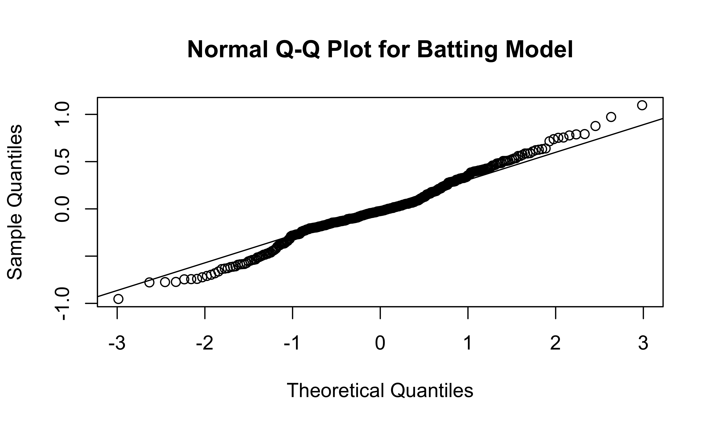
We decided to log-transform the salary variable because it is heavily right-skewed, and decided to use \(log_{10}\) instead of \(ln\) for the sake of interpretability. We included OPS+, the “all-in-one” measure of hitter performance as well as their number of years of experience.
From our model, we can see that batters with more experience have higher salaries, even adjusting for performance. At the same time, adjusting for service time, batters with higher OPS+ (that is, batters who perform better) have significantly higher salaries.
Based on this model, which player provided the best value for money? Who was most cost effective? That would be the player with a high OPS+ and the lowest residual, indicating that their actual salary was lower than predicted based on their performance.
Top 5 Batters by Value
merged_batting |>
modelr::add_predictions(lm_batting) |>
modelr::add_residuals(lm_batting) |>
arrange(resid) |>
select(name, salary_2022, service_time_floor, experience_group, ops_2, pred, resid ) |>
mutate(expected_salary = 10^pred) |>
slice(1:5) |>
view()Top 10 Batters by Salary
merged_batting |>
modelr::add_predictions(lm_batting) |>
modelr::add_residuals(lm_batting) |>
arrange(desc(salary_2022)) |>
select(name, salary_2022, service_time_floor,experience_group, ops_2, pred, resid ) |>
mutate(expected_salary = 10^pred) |>
slice(1:10) |>
view()It looks like in 2022, the most cost-effective player was Albert Pujols, who made $2.5 million in his 21st season with an OPS+ of 151.
Pitching Model
lm_pitching = lm(log10(salary_2022) ~ hand + pitcher_type + hand*pitcher_type + ip_total + era_2 + bb9 + so9 + experience_group,
data = merged_pitching)
broom::tidy(lm_pitching)| term | estimate | std.error | statistic | p.value |
|---|---|---|---|---|
| (Intercept) | 6.5815420 | 0.3024707 | 21.759271 | 0.0000000 |
| handrhp | -0.4242111 | 0.3054319 | -1.388890 | 0.1656240 |
| pitcher_typer | -0.8528043 | 0.2839805 | -3.003038 | 0.0028375 |
| pitcher_types | -0.5941512 | 0.2867592 | -2.071952 | 0.0388977 |
| ip_total | 0.0014225 | 0.0003437 | 4.138882 | 0.0000424 |
| era_2 | -0.0004776 | 0.0002877 | -1.659882 | 0.0977066 |
| bb9 | -0.0377370 | 0.0128069 | -2.946623 | 0.0033969 |
| so9 | 0.0247501 | 0.0072925 | 3.393930 | 0.0007564 |
| experience_group3+ years | 0.6080049 | 0.0299496 | 20.300925 | 0.0000000 |
| handrhp:pitcher_typer | 0.4144199 | 0.3072509 | 1.348800 | 0.1781494 |
| handrhp:pitcher_types | 0.3405457 | 0.3101460 | 1.098017 | 0.2728445 |
broom::glance(lm_pitching)| r.squared | adj.r.squared | sigma | statistic | p.value | df | logLik | AIC | BIC | deviance | df.residual | nobs |
|---|---|---|---|---|---|---|---|---|---|---|---|
| 0.6770215 | 0.6691053 | 0.2785755 | 85.52419 | 0 | 10 | -53.45206 | 130.9041 | 179.3586 | 31.66256 | 408 | 419 |
plot(residuals(lm_pitching) ~ fitted.values(lm_pitching),
main = "Residuals vs. Fitted Values Plot for Pitching Model",
xlab = "Fitted Values",
ylab = "Residuals")
abline(h = 0)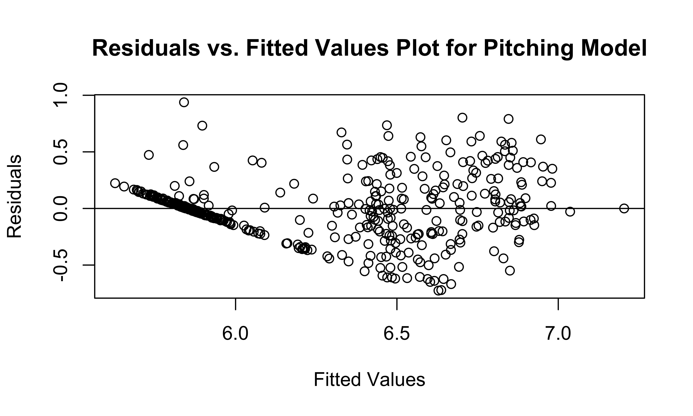
qqnorm(residuals(lm_pitching),
main = "Normal Q-Q Plot for Pitching Model")
qqline(residuals(lm_pitching))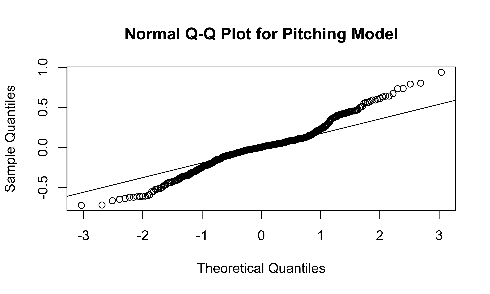
We decided to log-transform the salary variable because it is heavily
right-skewed, and decided to use \(log_{10}\) instead of \(ln\) for the sake of interpretability. We
included ERA+, the measure of a pitcher’s ERA relative to the league
average, as well as innings pitched (ip_total), walks per
nine innings (bb9) and strikeouts per nine innings
(so9); we used walks/strikeouts per nine innings since the
total number of walks/strikeouts would be highly correlated with the
number of innings pitched.
We accounted for pitcher handedness (right vs. left) as well as pitcher type (the default type is a closing pitcher, with relief pitchers and starting pitchers also included in the model). Finally, we explored the interaction between handedness and pitcher type to see if pitcher type affects the relationship between handedness and salary.
From our model, we can see that pitcher handedness and pitcher type
have no significant effect on expected salary. Interestingly, the
era_2 predictor, even when accounting for pitcher
handedness, pitcher type, and the number of innings pitched, has an
insignificant \(P\)-value, implying
that there is no significant association between one of the most highly
regarded summative statistics for pitching effectiveness and pitcher
salary when accounting for pitcher handedness, pitcher type, innings
pitched, walk and strikeout rates, and service time.
The residuals vs. fitted values plot shows that the residuals are generally evenly spread out; the straight line on the left side of the plot represents the large number of MLB players who are still on their rookie contracts, and therefore have a low fitted value (as they usually make between $700,000 and $1,000,000 per year, which is quite low by MLB standards). The Normal Q-Q plot shows that the model’s residuals deviate only slightly from Normal behavior.
Top 5 Pitchers by Value
merged_pitching |>
modelr::add_predictions(lm_pitching) |>
modelr::add_residuals(lm_pitching) |>
arrange(resid) |>
select(name, salary_2022, service_time_floor, experience_group, era_2, pred, resid ) |>
mutate(expected_salary = 10^pred) |>
slice(1:5) |>
view()Top 10 Pitchers by Salary
merged_pitching |>
modelr::add_predictions(lm_pitching) |>
modelr::add_residuals(lm_pitching) |>
arrange(desc(salary_2022)) |>
select(name, salary_2022, service_time_floor, experience_group, era_2, pred, resid ) |>
mutate(expected_salary = 10^pred) |>
slice(1:10) |>
view()Discussion
As MLB salaries continue to rise at exponential rates, it is important to assess whether the league’s biggest contracts are worth it. Baseball is currently undergoing an analytics-fueled revolution, inspired by statisticians such as Bill James and teams such as the 2002 “Moneyball” Oakland A’s, that is drastically changing the way the game is played and the way in which front offices choose which players to sign and how to maximize their talent. As a consequence of this revolution, MLB teams have deemphasized simpler statistics once thought of as key indicators of performance – such as batting average for hitters and wins for pitchers – in favor of more complex ones, such as OPS+ and ERA+, that more thoroughly encapsulate a player’s value to their team.
We sought to use these advanced statistics in order to explore whether players with top salaries are truly earning them. We found that while OPS+ had a significant positive association with salary for hitters, ERA+ had no significant association with salary for pitchers, implying that other indicators – specifically service time, innings pitched, walk rate, and strikeout rate – were stronger predictors of a player’s salary. The team-building implications of these results are fascinating, especially with respect to pitchers. If there is little to no association between a pitcher’s ability to limit runs and their salary, which kinds of pitchers should teams sign in order to maximize the value of their contracts?
Our pitching model was more sophisticated than our batting model for
two main reasons: first, there was more available data on pitcher
handedness and pitcher type that we felt was necessary to adjust for in
the model, and second, a pitching model based only on ERA+ and service
time did not properly satisfy the assumptions of linear regression
(namely, the fitted values had a sharply bimodal, non-Normal
distrbution). In addition, we first tried treating service time as a
quantitative variable, but we found that our models overvalued veteran
players to the point where their predicted salaries were high regardless
of their underlying statistics. Therefore, we created a binary
experience_group variable, which separated players who were
on their rookie contracts (i.e. 0-2 years of experience) from players
who had reached salary arbitration (i.e. 3+ years of experience).
The top five batters and top five pitchers, by salary below expected, came from similar demographics: veterans on cheap deals. Interestingly, only two of the top five batters and one of the top five pitchers had an above-average OPS+ and ERA+, respectively. However, this doesn’t mean that these players didn’t carry a good deal of value for their teams, as even a league-average player on a far below-average salary gives teams more payroll flexibility without sacrificing too much production. The implications for team-building based on these results are clear: instead of spending large amounts on a select few players, give deals to veterans who may be undervalued by the market, as they are more likely to produce value than the most expensive players. The Tampa Bay Rays, a team known for their reluctance to spend as much as their success, have utilized this strategy quite well, riding a combination of young players on rookie contracts and veterans let go by other teams – such as Yandy Diaz, Manuel Margot, Ji-Man Choi, Corey Kluber, and Jeffrey Springs – to the fifth-highest winning percentage in MLB (out of 30 teams) over the last 10 seasons.
So, what does this mean for the players who earn top-dollar contracts? Eight of the top 10 batters and eight of the top 10 pitchers by salary recorded an OPS+ or ERA+ above 110, meaning that the hitters and pitchers were well above average at creating runs and recording outs, respectively. And yet, none of them, (even Mike Trout, a perennial MVP candidate, and Justin Verlander, who won the AL Cy Young Award as the AL’s top pitcher in 2022) had an expected salary that was higher than their actual salary. In fact, despite recording an excellent 169 ERA+, three-time Cy Young winner Max Scherzer was ranked among the top five least cost-effective pitchers in the league by our model. The primary reason: at $43.3 million, he was the highest-compensated hitter or pitcher in the entire league. Even though most of the top-paid MLB players enjoyed good if not great seasons, their performance was still not quite strong enough to justify their salaries.